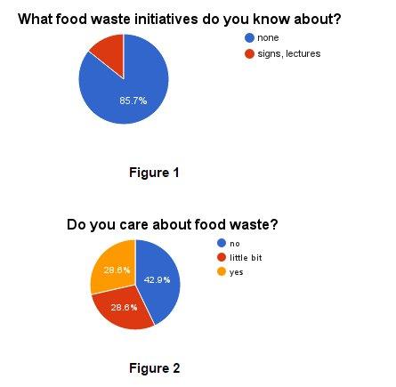
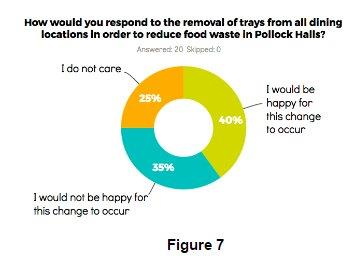
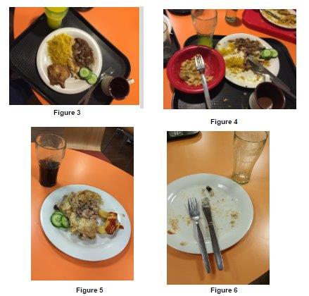

Trayless Dining was a semester-long project I completed at the University of Edinburgh. It is my project team's solution to the problem of food waste in campus dining halls. I was elected to be the Project Lead for the duration of the semester.
My team decided to tackle the issue of food waste in the campus dining hall. A few food waste sustainability initiatives already existed; but we wanted to try and change the current standard: feeding 2,000 students but producing enough food to feed 4,500. We faced significant challenges over the course of this project, including student apathy, a general lack of awareness of food waste initiatives, and pushback from the administration.
In the style of Design Thinking, we conducted a Fast Hack and interviewed a mix of international and full time students about food waste in dining halls in order to get an idea of the current climate surrounding food waste and sustainability. I then led a focus group to narrow down our ideas; from this group, we decided that Trayless Dining was our best option to decrease food waste. We then moved on to the Slow Hack portion of the class, where we conducted a Participatory Design workshop with 20 volunteers recruited from the student population. In this workshop, we asked half of the students to go trayless for three days and record the amount of food they ate and wasted, and then do the same for three days with trays. We asked the other half of our group to start with trays and then move on to recording their eating habits without a tray. I designed and built a website (http://juljoseph33.github.io/DDS/) which we used to get feedback on our plan, send out surveys, and recruit more participants. We also conducted background research on universities that already implement a trayless program, and spoke with key University Sustainability Officers and Dining Management stakeholders about our idea. Our slide deck can be found here https://edinburghlivinglab.github.io/dds/course_docs/5_Trayless_Dining.pdf.
I was elected as Team Leader of our group. This meant that in addition to my usual responsibilities of a team member, I had to hold weekly meetings with the team, set all of our deadlines, and lead our focus group and participatory design workshop. Furthermore, since I was the only coder on the team, I was in charge of creating our survey website and all of our data visualizations (which can be seen below).

Overall, we discovered that students simply just don't care about decreasing food waste, so therefore the best way to change their behavior was to change the environment around them. Trayless dining was considered to be the best option because our focus group deemed it the "least aggressive" of all of our options. Our pilot Participatory Design workshop showed that going trayless did make a significant impact on the amount of food waste that students produced.

Our followup survey showed that 65% of participants would not mind the removal of trays from the dining hall. We developed an implementation plan based on statistics and metrics taken from eight academic papers.
We received the highest grade in the class for our presentation, and we were assured by University Sustainability Officers that they would consider our recommended implementation plan to reduce food waste.